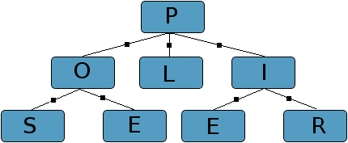

PoliSeer
Overview
PoliSeer is a simple IDE for security policies. It enables complex policies to be specified, visualized, modified, and enforced as compositions of simpler policy modules.
Contributors
Publications
PoliSeer: A Tool for Managing Complex Security Policies. Daniel Lomsak and Jay Ligatti. Journal of Information Processing, Vol 19, pp 292-306, Information Processing Society of Japan, July 2011. [BibTeX]
PoliSeer: A Tool for Managing Complex Security Policies. Daniel Lomsak and Jay Ligatti. Proceedings of the International Conference on Trust Management (IFIP-TM), June 2010. [BibTeX]
PoliSeer: A Tool for Managing Complex Security Policies. Daniel Lomsak and Jay Ligatti. Technical Report CSE-SSec-112509, University of South Florida, November 2009. [BibTeX]
Download
PoliSeer v-0.9.0 (released 2/26/09)
Tutorials
Basics of specifying policies in PoliSeer
Acknowledgement
This material is based upon work supported by the National Science Foundation under Grant Nos. CNS-0742736 and CNS-0716343. Any opinions, findings, conclusions, or recomendations expressed in this material are those of the authors and do not necessarily reflect the views of the National Science Foundation.